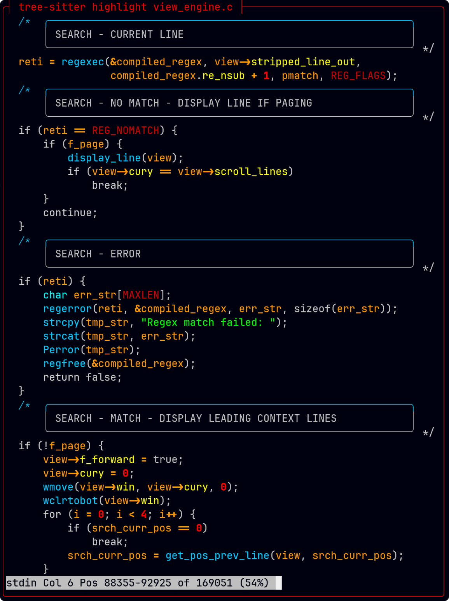

2026-01-17T19:49:43-06:00
C-Menu is written in C, but there are many amazing tools written in Rust that can augment your experience using C-Menu. Even if you never plan to write code in rust, the Cargo package manager that comes with Rust is worth the effort to install Rust. Cargo is generally the easiest and most reliable way to install Rust-based tools and their dependencies. Below are instructions on how to install Rust and some of my favorite Rust-based tools.
Run the following in your terminal, then follow the onscreen instructions.
curl --proto '=https' --tlsv1.2 -sSf https://sh.rustup.rs | shFor more detailed instructions, visit
the official Rust installation page
After installation, ensure that your environment is set up correctly by running:
source $HOME/.cargo/envYou can verify the installation by checking the Rust version:
rustc --versionThis should display the installed Rust version, confirming that Rust is successfully installed on your system.
You can update Rust and Cargo at any time by running:
rustup updateEventually, if there is enough interest in C-Menu, it will be ported to Rust. The plan is to thoroughly test and debug the C version, and incrementally incorporate Rust-like coding paradigms into the C codebase. Once the C version is stable and feature complete, a full port to Rust will be undertaken. And, then it will be called R-Menu. 😀
Bat is a popular Rust-based tool that serves as a cat clone with syntax highlighting. It’s easier to install than Tree-Sitter. To install Bat, you can use the following commands based on your operating system:
After installing Rust, you can install Bat using Cargo, Rust’s package manager:
cargo install bat brew install bat choco install batAfter installation, you can verify that Bat is installed correctly by running:
bat --versionThis should display the installed Bat version, confirming that Bat is successfully installed on your system.
Ripgrep is a modernized and powerful replacement for grep. It is amazingly fast and incorporates many features not available in grep.
To install Ripgrep, you can use the following commands depending on your operating system
After installing Rust, you can install Ripgrep using Cargo, Rust’s package manager:
cargo install ripgrep brew install ripgrep choco install ripgrepAfter installation, you can verify that Ripgrep is installed correctly by running:
rg --versionThis should display the installed Ripgrep version, confirming that Ripgrep is successfully installed on your system.
To install lsd, a modern replacement for ‘ls’ with colorful output and additional features, you can use the following commands based on your operating system:
After installing Rust, you can install lsd using Cargo, Rust’s package manager:
cargo install lsd brew install lsd choco install lsdAfter installation, you can verify that lsd is installed correctly by running:
lsd --versionThis should display the installed lsd version, confirming that lsd is successfully installed on your system
To put it mildly, Tree-Sitter is a game-changer when it comes to parsing and analyzing source code. It provides a robust and efficient way to build incremental parsers for programming languages, enabling advanced features like syntax highlighting, code folding, and more. Tree-Sitter is widely adopted in various code editors and IDEs, making it an essential tool for developers who work with code on a regular basis.
The syntax highlighting provided by Tree-Sitter is top-notch, offering precise and context-aware highlighting that enhances code readability and understanding. It can handle complex language constructs and edge cases that traditional syntax highlighters often struggle with.
In a phrase, it’ll knock your socks off! 😮
Tree-Sitter works with Neovim, C-Menu, and many other editors and pagers to provide advanced syntax highlighting and code analysis features.
 To install Tree-Sitter, you can use the following commands depending on your operating system:
After installing Rust, you can install Tree-Sitter using Cargo, Rust’s package manager:
cargo install tree-sitter-cli brew install tree-sitter choco install tree-sitterAfter installation, you can verify that Tree-Sitter is installed correctly by running:
tree-sitter --versionThis should display the installed Tree-Sitter version, confirming that Tree-Sitter is successfully installed on your system.
To install Tree-Sitter-CLI, a command-line interface for Tree-Sitter, you can use the following commands based on your operating system:
After installing Rust, you can install Tree-Sitter-CLI using Cargo, Rust’s package manager
cargo install tree-sitter-cli brew install tree-sitter-cli choco install tree-sitter-cliAfter installation, you can verify that Tree-Sitter-CLI is installed correctly by running:
tree-sitter --versionThis should display the installed Tree-Sitter-CLI version, confirming that Tree-Sitter-CLI is successfully installed on your system.
To install Tree-Sitter parsers for various programming languages, you can use the following commands based on your operating system:
After installing Rust, you can install Tree-Sitter parsers using Cargo, Rust’s package manager. As always, I highly recommend installing only the parsers you need. Here are some examples:
cargo install tree-sitter-python
cargo install tree-sitter-javascript
cargo install tree-sitter-rust
cargo install tree-sitter-go
cargo install tree-sitter-cppI installed my tree-sitter parsers in the following directory structure:
~/.config/tree-sitter
├── config.json
└── parsers
├── tree-sitter-awk
├── tree-sitter-bash
├── tree-sitter-cpp
├── tree-sitter-c
├── tree-sitter-go
├── tree-sitter-lua
├── tree-sitter-markdown
├── tree-sitter-rust
└── tree-sitter-zigThe config.json file contains configuration settings for
Tree-Sitter. The parsers directory contains the installed
Tree-Sitter parsers for different programming languages.
"parser-directories": [
/home/bill/.config/tree-sitter/parsers
]You can also configure a custom color scheme in the config.json file if you like. Here’s a sample of mine:
The ~/tree-sitter/config.json distributed with tree-sitter uses the 256 color xterm palette, but you can also use HTML style six digit hex numbers as shown above.
cargo install tree-sitter-<language> brew install tree-sitter-<language> choco install tree-sitter-<language>After installation, you can verify that the Tree-Sitter parser for your chosen language is installed correctly by running:
tree-sitter <language> --versionThis should display the installed Tree-Sitter parser version for your
chosen language, confirming that it is successfully installed on your
system. Replace <language> with the specific
programming language you want to install the parser for, such as
python, javascript, rust,
etc.
Even if you are an experienced programmer, Rust is not an easy language to learn. The ownership model and borrow checker are unique concepts that require a different way of thinking about memory management and data lifetimes. If you are new to programming, Rust can be even more challenging because it requires a solid understanding of programming fundamentals.
However, with dedication and practice, anyone can learn Rust. There are many great resources available online, including the official Rust documentation, tutorials, and community forums. Additionally, there are many books and courses that can help you learn Rust from scratch.
Start with the Rust Book, and concurrently do the exercises in Rustlings. Rustlings is an invaluable companion to the Rust Book.
And last, but certainly not least in my list of essential tools is Neovim. I loved vim and used it for many years. I can’t say whether Vim or Neovim is better because both have evolved to provide competitive features. I can say, for me, Neovim plugins seem more accessible, and it has everything I want and more.
Lazyvim is a Neovim configuration that is designed to be fast, minimal, and easy to use. It comes with a set of pre-configured plugins and settings that enhance the Neovim experience. Lazyvim is highly customizable, allowing users to tailor their Neovim setup to their specific needs.
To install Neovim and Lazyvim, follow the instructions on the Lazyvim website.
Ghostty is a terminal emulator that is designed to be fast, lightweight, and highly customizable. It is built using Rust and leverages modern technologies to provide a smooth and efficient terminal experience. Ghostty supports features such as GPU acceleration, ligatures, and a wide range of customization options.
To install Ghostty, you can use the following commands based on your operating system:
After installing Rust, you can install Ghostty using Cargo, Rust’s package manager:
cargo install ghostty brew install ghostty choco install ghosttyAfter installation, you can verify that Ghostty is installed correctly by running:
ghostty --versionFor more information on Rust and its tools, you can visit the following resources:
By following the above instructions, you can easily install Rust and various Rust-based tools to enhance your C-Menu experience. Enjoy coding with these powerful tools!